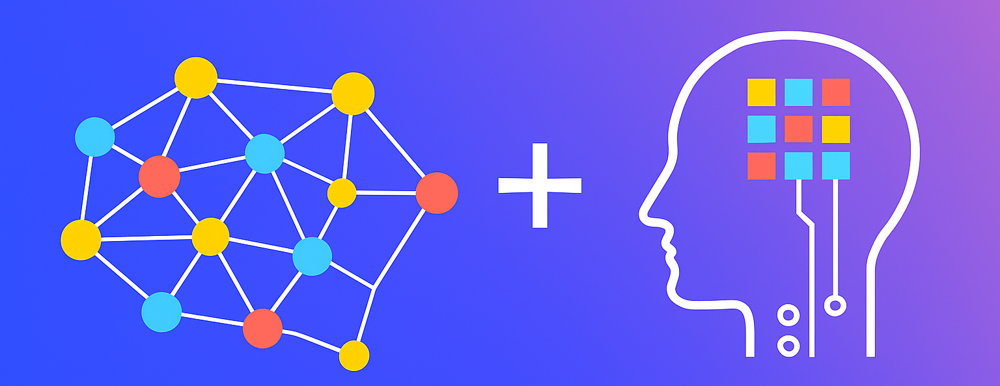

CIKM 2025 Workshop
Frontiers in Graph Machine Learning for the Large Model Era
The 34th ACM International Conference on Information and Knowledge Management
Workshop description
The “Frontiers in Graph Machine Learning for the Large Model Era†workshop focuses on advancing graph machine learning (GML) techniques in the context of increasingly large and powerful models. Graphs offer a principled way to represent structured and relational data, making them essential for capturing complex dependencies in knowledge, systems, and behaviors. As the scale and influence of foundation models grow, graph learning stands at a unique vantage point to enhance model robustness, improve interpretability, and integrate domain-specific relational priors. This workshop explores how graph learning can support emerging needs in knowledge reasoning, temporal and multi-hop inference, and AI systems. It also investigates how advances in representation learning, structure-aware generalization, and efficient graph processing can contribute to trustworthy and scalable AI systems. By convening experts in graph learning, knowledge management, and LLMs, the workshop aims to identify core challenges and opportunities of GML in the large model era.
📩 Contact us at: {zwzhang, sunqy}@buaa.edu.cn